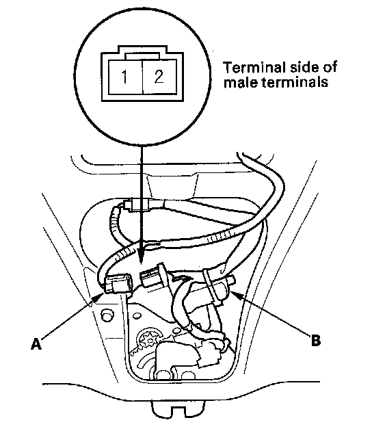

Power Tailgate Closer Motor Test
Power Tailgate Closer Motor Test1. Remove the tailgate trim panel.

2. Disconnect the 2P connector (A) from the closer motor (B).
3. Check motor operation by connecting battery power to the tailgate closer unit 2P connector No. 2 terminal and ground to the No. 1 terminal. To prevent damage to the motor, apply battery voltage only momentarily. The motor should run.
4. If the motor does not run or fails to run smoothly, replace the tailgate latch assembly.